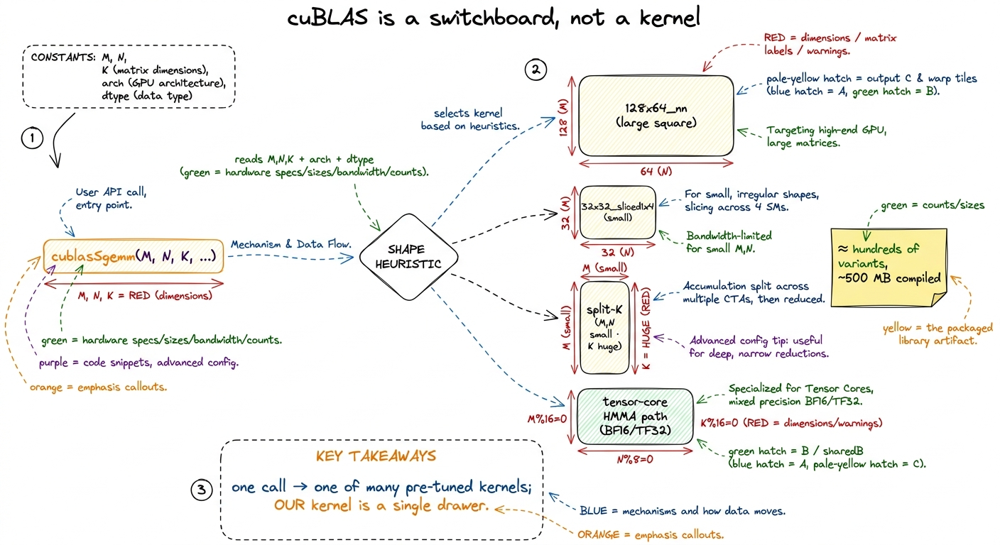
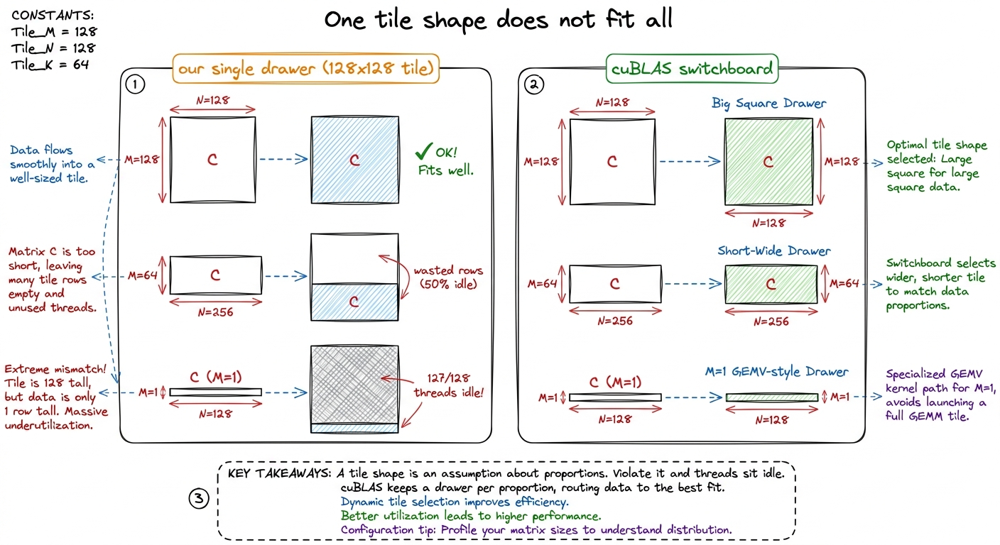
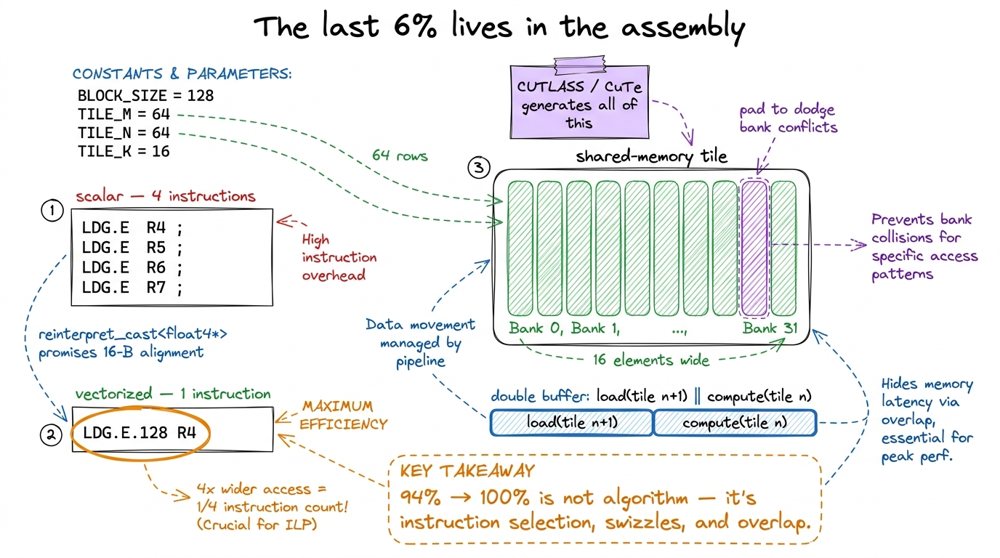

What cuBLAS is actually doing
Every number on this site is a fraction of one denominator: cuBLAS. When kernel 1 hits 1.3% of cuBLAS and the warptile kernel claws its way to 93.7%, the thing in the divider is a closed-source library that ships inside every CUDA install and that NVIDIA has been tuning for fifteen years. Before we spend the next ten articles chasing it, it is worth stopping to ask a question I avoided for embarrassingly long: what is cuBLAS actually doing in there? Because you cannot beat — or even honestly measure yourself against — a black box you refuse to open.
This article opens it. Not to reverse-engineer it (you can't; it's proprietary), but to name the five things it does that our single hand-written kernel does not, and to explain why those five things are exactly the reason the last ~6% costs more engineering than the first 94%.
It is not one kernel — it is a library of hundreds
The first surprise, and the one that reframes everything, is that cuBLAS does not contain a SGEMM. Profile a sweep of square sizes from 128 to 4096 and you will see the dispatcher hand the work to a rotating cast of differently-named kernels — ampere_sgemm_128x64_nn for the big square cases, ampere_sgemm_32x32_sliced1x4_nn for the small ones, and more than a dozen others in between.1 Simon Boehm traced 16 distinct kernels across that sweep and found the compiled library to be roughly 500 MB. Our warptile kernel is a few kilobytes of PTX. The size difference is the performance gap, made physical. The compiled library is on the order of half a gigabyte, and most of that bulk is thousands of pre-tuned kernel variants, one for every shape regime the authors thought worth specializing.
Our worklog produces exactly one kernel with one set of tile constants — BM, BN, BK, TM, TN — baked in at compile time. Those constants are tuned for one shape (large squares) on one Streaming Multiprocessor (SM) generation. Feed that kernel a tall-skinny 4096 × 4096 × 64 problem and it will waste most of its threads. cuBLAS will not, because it has a different kernel sitting in the drawer for exactly that shape, and a heuristic whose whole job is to pick it.

figure rendering · cuBLAS is a shape-indexed switchboard over hundreds of specialized kerThe shape heuristic: picking the right drawer
The heuristic is the part people forget exists, and it matters most precisely when the problem is not a big square. A GEMM ladder tuned on 4096 × 4096 squares quietly assumes the arithmetic intensity is huge and every SM is saturated. Real workloads violate that constantly: the Q·Kᵀ in attention is often M×N large but K small; an MLP down-projection can be tall and skinny; a batched decode step can have M = 1.
For each of those, the "right" kernel is a different point in the tile-shape space. If K is small, a big BK tile wastes shared memory staging data that isn't there. If M is tiny, a 128×128 block tile launches mostly-idle warps. The heuristic reads M, N, K, the dtype, and the SM architecture, and indexes into a table — part measured, part modeled — to choose the block tile, the number of split-K slices, and whether to route through the tensor cores at all. On an H100 that table has to reason about 132 SMs across 8 GPCs; leave any of them idle and you've thrown away peak before the first wgmma even fires.
Split-K: the trick for skinny problems
Here is the one that surprised me most, because it breaks the mental model the entire ladder is built on. Our whole design assigns one output tile of C to one thread block, and the block sweeps the full K dimension in its inner loop. That is perfect when there are enough output tiles to fill all 132 SMs. But when M and N are small and K is enormous — say 256 × 256 × 16384 — there are only a handful of output tiles. A handful of blocks means a handful of SMs busy and the other ~120 sitting dark. You are compute-starved not because there isn't work, but because the parallelization axis is too short.
Split-K fixes this by parallelizing along the contraction dimension. You slice the K loop into, say, 8 chunks, give each chunk to a separate block (or grid), let each compute a partial sum over its slice of K, and then reduce the partial products into the final C with a second pass.2 This is why, at N = 256, a cuBLAS profile shows two kernels launched back to back: the split-K matmul that writes partials, then a separate reduction kernel that sums them. One cublasSgemm call, two kernel launches — the extra launch is the tell. It trades a little extra memory traffic and a reduction for a huge gain in occupancy. Our single kernel physically cannot do this: it has no reduction pass and no notion of slicing K across blocks. Split-K is a structural capability, not a tuning constant, which is why no amount of autotuning our block-per-tile kernel will ever recover the skinny-K case.

figure rendering · Split-K parallelizes the contraction dimension to keep all 132 SMs busThe tensor-core path we've been ignoring
There is an enormous asterisk hanging over the entire FP32 ladder, and honesty requires stating it plainly: the whole 1.3% → 93.7% climb happens on the CUDA cores, with the tensor cores switched off. We are matching cuBLAS's FP32, non-tensor-core configuration. That is a fair fight and a great teacher, but it is not the fast path.
When you let cuBLAS use the tensor cores — feeding it TF32 or BF16 — it doesn't get a few percent faster, it gets 2.5× to 3.5× faster, because it stops issuing scalar FFMA instructions and starts issuing matrix-multiply-accumulate instructions that do a whole small tile in one shot.3 On Ampere that instruction is HMMA.16816; on Hopper it's the warpgroup-wide wgmma (sm_90a), which multiplies a 64×N×16 tile with a single instruction issued cooperatively by 128 threads. Blackwell moves this again to tcgen05 with a dedicated Tensor Memory (TMEM) — a different article. An H100 does about 989 TFLOP/s of BF16 through those units, versus well under a tenth of that (~67 TFLOP/s FP32) on the CUDA cores. So the real cuBLAS you race in production is not the one at the top of our ladder — it is a tensor-core kernel doing an order of magnitude more math per clock. Reaching that is a separate climb, and it starts in the tensor-core article. Everything we do in FP32 is the scaffolding that makes the tensor-core version comprehensible rather than magic.
The autotuned tile library
Even within a single shape regime, cuBLAS does not trust a human to have picked the best tile sizes. It ships a library of pre-compiled kernels that differ only in their tile constants — the (BM, BN, BK, TM, TN) tuple, the warptile shape, the number of pipeline stages — and selects among them by measurement, not by intuition. We rediscover the need for this ourselves: autotuning our own kernel, sweeping those same constants, moves us from 78.4% (hand-picked vectorized kernel) to 84.8% with nothing changed but the numbers.4 And the winning numbers are not portable. Boehm found BM=BN=128, BK=16, TM=TN=8 optimal on an A6000 but BM=BN=64, BK=16, TM=TN=4 best on an A100 — same code, different silicon, different optimum. This non-portability is exactly why cuBLAS ships a whole library instead of one kernel.
cuBLAS does this over hundreds of variants instead of our dozen, across every architecture, and it does it once, offline, at library build time — so at runtime the cost is a table lookup, not a search. That is a luxury we don't have and a fair reason it will always edge us out on the long tail of shapes.
Why the last 6% needs assembly
Assume we've done everything above: shape-appropriate tiles, good occupancy, autotuned constants. We are still stuck around 94%, and this is where the character of the work changes completely. The remaining gap is not algorithmic — it is a fistful of low-level details, each worth a fraction of a percent, that only surrender to reading the generated SASS (the actual machine assembly) and forcing the compiler's hand.
Three concrete examples from our own ladder show the flavor:
- Vectorized memory instructions. The compiler will only emit a 128-bit
LDG.E.128load — moving four floats in one transaction — if it can prove the pointer is 16-byte aligned. It usually can't. Casting throughfloat4andreinterpret_castis a promise to the compiler that unlocks the wide instruction; verifying it landed means diffing the SASS forLDG.E.128versus four scalarLDG.Es. - Shared-memory access shape. Transposing the
Astile in shared memory so that a warp's reads become oneLDS.128instead of four scalarLDSbought us roughly 3% — a change invisible in the C++ and obvious only in the assembly.5 Both of these are why "read the SASS" is the recurring refrain of this whole site. C++ is a suggestion; SASS is what runs. The gap between them is where the last few percent hides. - Bank conflicts and double buffering. Padding shared-memory tiles to dodge conflicts across the 32 banks, and double-buffering so the next tile's global load overlaps this tile's math, are pure latency-hiding tricks with no algorithmic content.
Doing this by hand, kernel by kernel, is exactly what a human should not be doing at scale — which is the entire reason CUTLASS and its layout algebra CuTe exist. CUTLASS is NVIDIA's open-source template library that expresses the same four-level tiling hierarchy we build by hand — block tile → warp tile → warp subtile → thread tile — but as composable C++ templates, so that the wide loads, the conflict-free swizzles, the double-buffered pipeline, and the wgmma issue are generated correctly instead of hand-massaged. CuTe's core abstraction is the Layout — a compile-time (shape, stride) object that makes coalescing and swizzling algebraic rather than manual, turning "read the SASS and pray" into "compose the layout and it's correct by construction." It is, essentially, the machinery to write kernels in the cuBLAS style without hand-authoring 500 MB of them.

figure rendering · The final few percent are won by forcing wide loads, dodging bank confWhere this leaves us
So cuBLAS is five things at once: a shape heuristic, a split-K reducer for skinny problems, a tensor-core kernel we've been deliberately ignoring, an offline-autotuned library of hundreds of tile variants, and a pile of assembly-level instruction tricks. Our single FP32 kernel competes with exactly one slice of that — the CUDA-core large-square case — and gets to 93.7% of it precisely because we picked the fight where the black box has the least advantage.
That framing tells us where to go next, and both directions are their own articles. The tensor-core path is the bigger prize: switching from FFMA to wgmma is the 2.5–3.5× jump, and understanding it is the difference between a 1.3% FP32 hobbyist and someone who can touch the 989 TFLOP/s the chip actually offers. The three regimes told us big GEMMs are compute-bound; the tensor cores are how you finally spend that compute. And CUTLASS is how you write kernels in the cuBLAS idiom without hand-authoring the assembly — the tool that turns everything in this article's last section from heroics into templates. We open the tensor cores first, then CUTLASS. The black box has a lid now; time to look at the fastest thing inside it.